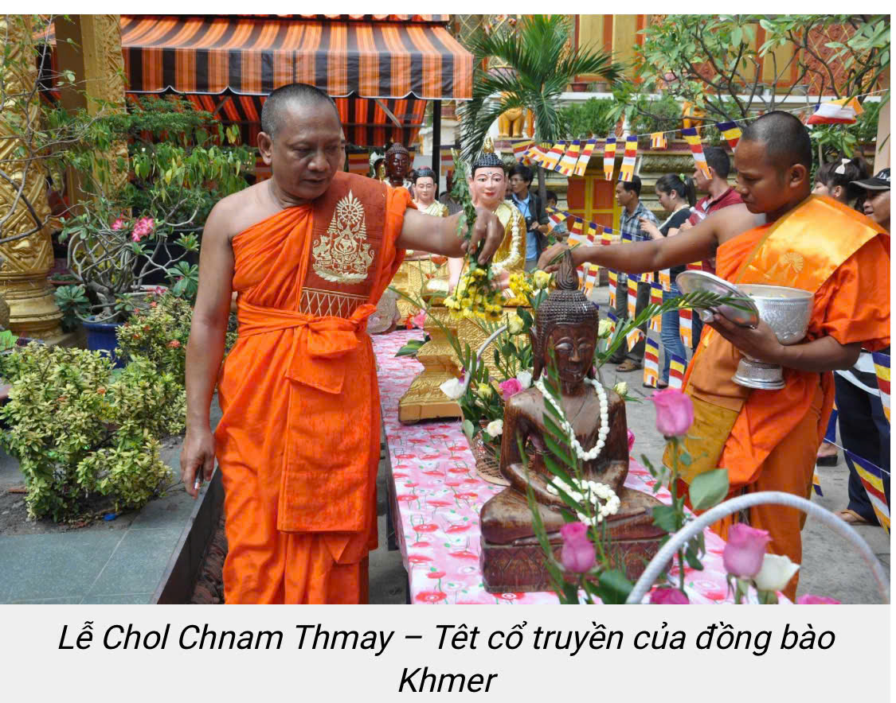
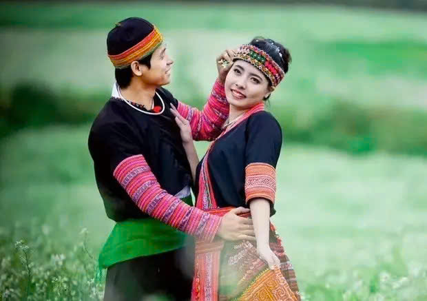
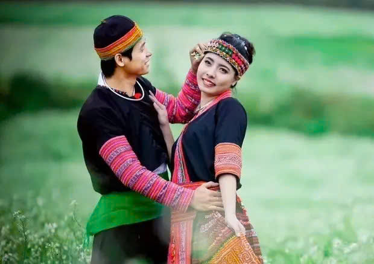
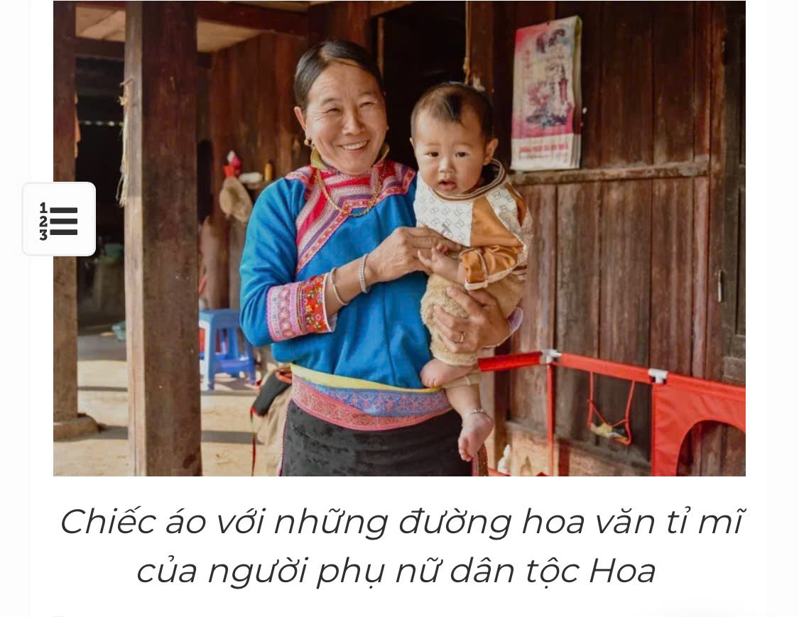

Sơ Lược Về Tỉnh Bình Phước
Bình Phước là một tỉnh thuộc miền Đông Nam Bộ, có 11 huyện, thị xã, thành phố, trong đó có 3 huyện biên giới (Bù Gia Mập, Bù Đốp, Lộc Ninh) tiếp giáp với 3 tỉnh thuộc Vương quốc Campuchia (Mondulkiri, Kratie, Tboung Khmum), với tổng chiều dài đường biên giới là 258,939km, với 28 cột mốc chính, 353 cột mốc phụ. Hiện nay, tỉnh Bình Phước đang quản lý 4 cửa khẩu (Cửa khẩu quốc tế Hoa Lư, Cửa khẩu chính Hoàng Diệu, Lộc Thịnh, Cửa khẩu phụ Tân Tiến) và 1 lối mở. Là địa bàn trung chuyển giữa Nam Tây Nguyên và miền Đông Nam Bộ, nên Bình Phước có địa hình rất đa dạng, gồm cả địa hình cao nguyên, đồi núi và đồng bằng.
Trên địa bàn tỉnh Bình Phước có 41 dân tộc sinh sống. Tính đến hết năm 2022, dân số của tỉnh ước 1.034.667 người (theo báo cáo của Cục Thống kê tỉnh Bình Phước), phân bố trên 11 đơn vị hành chính cấp huyện gồm: 01 thành phố (Đồng Xoài), 03 thị xã (Phước Long, Bình Long, Chơn Thành), 07 huyện (Đồng Phú, Bù Đăng, Bù Đốp, Bù Gia Mập, Lộc Ninh, Hớn Quản, Phú Riềng), với 111 xã, phường, thị trấn.
Tổng số người DTTS là 195.635 người, chiếm 19,67% dân số cả tỉnh. Toàn tỉnh có 41 thành phần dân tộc thiểu số và 01 thành phần người nước ngoài là 42, trong đó:
- 09 thành phần dân tộc thiểu số có dân số từ 1000 người trở lên, chiếm 98,12% tổng số DTTS, gồm: Dân tộc S’tiêng: 96.649 người; Dân tộc Khmer: 19.315 người; Dân tộc Mnông: 10.879 người; Dân tộc Tày: 24.862 người; Dân tộc Nùng: 23.917 người; Dân tộc Hoa: 8.409 người; Dân tộc Mường: 3.286 người; Dân tộc Dao: 3.104 người; Dân tộc Thái: 1.536 người.
- Có 32 thành phần dân tộc thiểu số khác là 3.678 người, chiếm 1,88%
Dân Tộc Khmer
Đồng bào dân tộc Khmer sinh sống chủ yếu ở 03 địa phương: huyện Lộc Ninh (các xã: Lộc Khánh, Lộc Hưng, Lộc Thịnh, Lộc Quang, Lộc Thành), thị xã Chơn Thành (xã Nha Bích) và thành phố Đồng Xoài (các phường: Tân Xuân, Tân Thiện, Tân Bình). Đồng bào Khmer chấp hành tốt chủ trương, đường lối của Đảng, chính sách, pháp luật của Nhà nước; ý thức giữ gìn và phát huy bản sắc văn hoá truyền thống của dân tộc được thực hiện tốt, việc tổ chức các ngày lễ, Tết của dân tộc luôn được cấp ủy Đảng, chính quyền địa phương phối hợp tổ chức trang trọng, tiết kiệm, vui tươi, an toàn, bảo đảm an ninh chính trị, trật tự an toàn xã hội tại địa phương.
Có thể khẳng định, các chương trình, chính sách, dự án phát triển kinh tế - xã hội được thực hiện đồng bộ và hiệu quả, công tác an sinh xã hội được thực hiện đầy đủ, kịp thời, bản sắc văn hóa truyền thống tốt đẹp của người dân tộc Khmer được bảo tồn, phát huy… góp phần nâng cao đời sống vật chất, tinh thần của đồng bào DTTS nói chung, đồng bào Khmer nói riêng, củng cố thêm niềm tin của đồng bào vào sự lãnh đạo của Đảng, Nhà nước./.
Dân Tộc S'tiêng
Dân tộc S'Tiêng, một trong những dân tộc thiểu số đặc biệt của Việt Nam, không chỉ góp phần làm phong phú bức tranh văn hóa dân tộc mà còn tỏa sáng với những tiềm năng và triển vọng phát triển trong thời đại hiện đại.
S'Tiêng có một nền văn hóa đa dạng và phong phú, với những đặc điểm riêng biệt trong ngôn ngữ, trang phục truyền thống, phong tục tập quán và nghệ thuật. Ngôn ngữ S'Tiêng là một trong những di sản văn hóa quý giá, được truyền đạt từ thế hệ này sang thế hệ khác, thể hiện sự gắn kết và sự tồn tại của dân tộc này. Trang phục truyền thống của S'Tiêng cũng đặc biệt và đẹp mắt, thể hiện sự tài hoa và khéo léo của người dân. Ngoài ra, các nghệ thuật truyền thống như múa cổ S'Tiêng và điệu múa giao hưởng cũng là những điểm nhấn văn hóa đặc sắc của dân tộc này.


Dân Tộc Tày, Nùng
Đồng bào Tày, Nùng là hai trong số các cộng đồng cư dân đã sinh sống lâu đời ở khu vực phía Bắc nước ta. Do các yếu tố về lịch sử, văn hóa và điều kiện cư trú, hai cộng đồng cư dân này có nhiều đặc điểm văn hóa tương đồng. Theo số liệu thống kê năm 2011, người Tày, Nùng ở Bình Phước là hơn 50 ngàn người. Ở xã Thống Nhất (Bù Đăng), người Tày lên đến 2.000 người, trong đó thôn 12 có khoảng 50% số dân là người Tày. Hoặc ở thôn Tân Phước, xã Tân Tiến (Bù Đốp) người Tày, Nùng chiếm gần 70% số dân toàn thôn.
Người Tày, Nùng có nền văn hóa phát triển lâu đời và rất đa dạng, phong phú. Trong đó, nhiều giá trị đặc sắc trong các dịp lễ, tết cổ truyền của người Tày, Nùng ở Bình Phước càng thêm đa dạng, phong phú. Ngoài trang hoàng nhà cửa, bàn thờ tổ tiên thì người dân còn tìm đến những người giỏi chữ Hán và viết chữ đẹp để xin câu đối dán ở cửa chính ngôi nhà cầu phúc và may mắn.
Không khí tết thực sự bắt đầu sau lễ cúng tất niên (tối ba mươi) và sau lễ giao thừa. Những nơi đông dân, mỗi gia đình sẽ cử đại diện một người, tập trung ở nhà có vị lớn tuổi nhất (gọi là trưởng làng) rồi đến từng nhà trong thôn chúc tết. Ngoài chúc tết nhau, ở nơi người Tày, Nùng cư trú tập trung như xã Tân Tiến (Bù Đốp), Thống Nhất (Bù Đăng) còn duy trì các trò chơi dân gian như: đu quay, ném còn, đánh cờ... Các hoạt động này thường bắt đầu từ mồng ba tết và kết thúc vào ngày mồng 5, 6. Ở một số nơi khác như xã Bom Bo (Bù Đăng) còn tổ chức hát then, múa sạp...
Nói đến bản sắc người Tày, Nùng thì tết Thanh Minh cũng mang dấu ấn đậm nét. Tết Thanh Minh diễn ra trong tháng ba (âm lịch) hằng năm, tập trung từ mồng ba tháng ba đến mồng mười tháng ba. Đây là dịp để người sống tưởng nhớ, tri ân công lao của người thân đã khuất, thể hiện đạo lý “Uống nước nhớ nguồn” cao đẹp. Ở Bình Phước, một số nơi người dân vẫn duy trì việc an táng người thân trong khu vực vườn nhà, một số nơi thì an táng tập trung tại nghĩa trang. Tuy nhiên, dù an táng ở đâu thì họ vẫn duy trì hoạt động dọn dẹp chỉnh trang lại các ngôi mộ (làm cỏ, quét vôi) trong ngày Thanh Minh. Nếu gia đình đông người và phải cúng nhiều ngôi mộ thì họ sẽ mổ heo, nếu ít thì chỉ mua thực phẩm về chế biến một mâm cỗ để cúng tại mộ. Sau đó cả gia đình cùng ăn uống tại mộ. Một món ăn không thể thiếu trong ngày này luôn có bánh tro - một loại bánh gói từ gạo, nước tro lọc sạch. Nếu tết Nguyên đán là tết khởi đầu cho mùa Xuân thì tết Thanh Minh được xem như là lễ kết thúc trong mùa Xuân, một sự kết thúc hết sức ý nghĩa.
 

Dân Tộc Hoa
Cùng với cộng đồng các dân tộc anh em khác, người Hoa là bộ phận không thể tách rời trong khối đại đoàn kết các dân tộc sinh sống trên địa bàn huyện Lộc Ninh, tỉnh Bình Phước. Ý thức thượng tôn pháp luật, sự đoàn kết, tinh thần tương thân, tương ái được kế thừa và phát huy đã giúp cộng đồng người Hoa nơi đây ngày càng lớn mạnh và có những đóng góp thiết thực cho quá trình phát triển của huyện biên giới Lộc Ninh.
Dân tộc Mnông
Trên dãy đất sơn nguyên Bình Phước, bên cạnh cộng đồng người Stiêng được coi là dân tộc bản địa thì người M’nông cũng là cộng đồng sinh sống lâu đời. Họ đã kiến tạo cho riêng mình một bản sắc văn hóa độc đáo, riêng có với sự tổng hòa của văn hóa cổ truyền và có sự giao thoa, tiếp biến văn hóa với một số đồng bào dân tộc ở địa phương trong quá trình cộng cư, phát triển.
Đồng bào dân tộc M’nông ở Bình Phước hiện nay có trên 10 nghìn người, thường gọi là nhóm Bù Noong, sinh sống sống rải rác thành từng buôn, sóc ở các xã Đồng Nai, Thọ Sơn, Đắk Nhau (của huyện Bù Đăng) và xã Đắk Ơ, xã Bù Gia Mập (của huyện Bù Gia Mập). Trên địa bàn tỉnh Bình Phước có sáu di sản văn hóa phi vật thể được ghi vào Danh mục di sản văn hóa phi vật thể quốc gia: Lễ hội truyền thống Lễ hội Miếu Bà Rá thị xã Phước Long; Tri thức dân gian, nghề thủ công truyền thống Kỹ thuật chế biến rượu cần của người S’Tiêng tỉnh Bình Phước; Lễ hội truyền thống, tập quán xã hội và tín ngưỡng Lễ hội Dua Tpeng (Phá Bàu) của người Khmer xã Lộc Khánh, huyện Lộc Ninh; Lễ hội truyền thống Lễ hội Cầu bông của người Kinh (huyện Hớn Quản, huyện Chơn Thành, huyện Bù Đăng, thị xã Bình Long, tỉnh Bình Phước); Nghề thủ công truyền thống Nghề dệt thổ cẩm của người M’nông; Nghề thủ công truyền thống Nghề Đan gùi của S’tiêng huyện Bù Đăng, huyện Bù Gia Mập, huyện Hớn Quản, huyện Lộc Ninh.